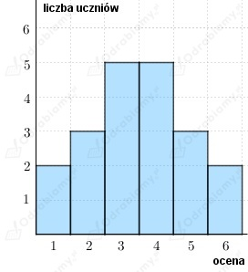
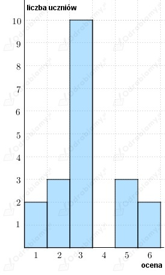
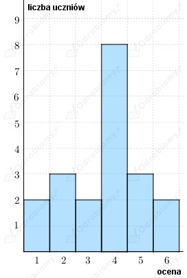

Z treści zadania wiemy, że liczba hodowców gołębi, to: 12.
Niech x1, x2, ... , x12 oznacza liczbę gołębi posiadaną przez każdego z hodowców.
Początkowo:
Obecnie jest łącznie o 36 gołębi mniej niż początkowo:
Zatem wyznaczamy początkową liczbę gołębi:
Wobec tego:
Odp: Obecnie na jednego członka klubu przypada średnio 47 gołębi.
Z treści zadania wiemy, że w klasie jest 20 osób.
Należy uzupełnić diagram o oceny dostateczne i dobre.
Zauważamy, że na diagramie zostały uwzględnione oceny dziesięciu uczniów, bo:
Zatem liczba brakujących ocen, to: 20-10=10.
Niech:
a - liczba uczniów mających ocenę dostateczną
b - liczba uczniów mających ocenę dobrą
zatem:
a)
Wiemy, że średnia ocen z geografii wynosi: 3,5
Wobec tego:
Rozwiązujemy układ równań:
zatem:
Wnioskujemy, że:
Rysujemy diagram:

b)
Wiemy, że średnia ocen z geografii wynosi: 3,25
Wobec tego:
Rozwiązujemy układ równań:
zatem:
Wnioskujemy, że:
Rysujemy diagram:

c)
Wiemy, że średnia ocen z geografii wynosi: 3,65
Wobec tego:
Rozwiązujemy układ równań:
zatem:
Wnioskujemy, że:
Rysujemy diagram:

Z treści zadania wiemy, że w firmie pracuje 15 osób.
Średnie miesięczne wynagrodzenie wynosi: 3800 zł.
Niech a będzie sumą wynagrodzeń wszystkich pracowników, zatem:
wobec tego:
a)
Jeżeli firma zatrudni stażystę z wynagrodzeniem miesięcznym 2200 zł, to średnie
miesięczne wynagrodzenie pracowników będzie wynosiło:
b)
Jeżeli firma zatrudni trzech stażystów, każdego z wynagrodzeniem miesięcznym 2300 zł, to średnie
miesięczne wynagrodzenie pracowników będzie wynosiło:
Z treści zadania wiemy, że w firmie jest zatrudnionych 20 osób.
Średnie miesięczne wynagrodzenie pracowników, to: 3200 zł.
Zatem jeśli a to suma zarobków wszystkich pracowników, to:
Wiadomo, że liczba pracowników zwiększyła się do 21 osób.
Należy obliczyć, ile zarabia nowy pracownik.
Niech b - oznacza miesięczne zarobki nowego pracownika.
a)
Średnie miesięczne wynagrodzenie wzrosło o 2%, zatem wynosi:
Wobec tego:
b)
Średnie miesięczne wynagrodzenie zmalało o 1%, zatem wynosi:
Wobec tego:
Z diagramu możemy odczytać, że w banku pracuje 25 osób.
Dyrektor zarabia 12000 zł.
a)
Obliczamy średnie miesięczne wynagrodzenie w tym banku:
b)
Obliczamy średnie miesięczne wynagrodzenie 10 najlepiej zarabiających pracowników:
Obliczamy średnie miesięczne wynagrodzenie 10 najgorzej zarabiających pracowników:
c)
Wiemy, że średnie miesięczne wynagrodzenie wzrosło o 10%, zatem wynosi:
Miesięczna pensja każdego z pracowników (oprócz dyrektora) wzrosła o 400 zł, więc
łącznie pracownicy zarabiają więcej o:
Niech a - podwyżka dyrektora, zatem: